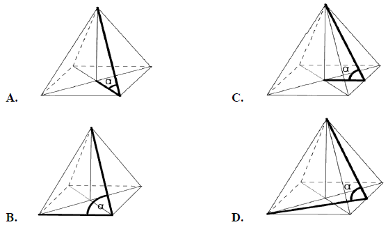
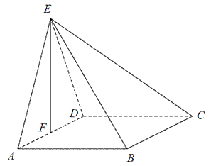
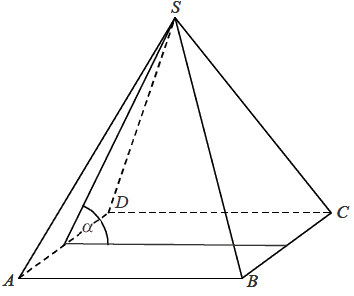
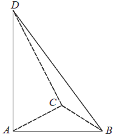
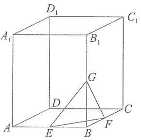
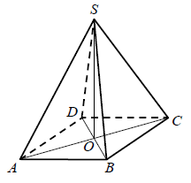
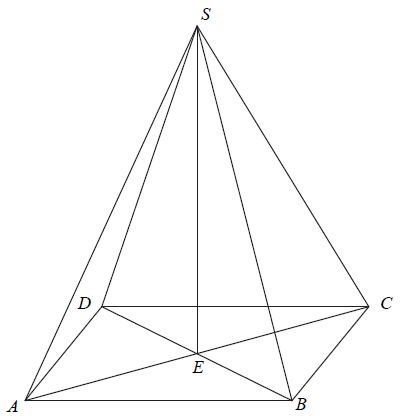

Jesteś tutaj: Matura
podstawowa - kurs - część 59 - zadania
Matura podstawowa - kurs - część 59 - zadania
Cały kurs na: ./matematyka-matura-podstawowa-kurs.html.
Kąt \(\alpha \) nachylenia ściany bocznej ostrosłupa prawidłowego czworokątnego do
płaszczyzny podstawy zaznaczony jest na rysunku: 
C
Podstawą ostrosłupa \(ABCDE\) jest kwadrat \(ABCD\). Punkt \(F\) jest środkiem
krawędzi \(AD\), odcinek \(EF\) jest wysokością ostrosłupa (patrz rysunek). Oblicz objętość
ostrosłupa, jeśli wiadomo, że \(|AE|=15\), \(|BE|=17\). 
\(\frac{64\sqrt{209}}{3}\)
W ostrosłupie prawidłowym czworokątnym \(ABCDS\) o podstawie \(ABCD\) i wierzchołku
\(S\) trójkąt \(ACS\) jest równoboczny i ma bok długości \(8\). Oblicz sinus kąta nachylenia ściany
bocznej do płaszczyzny podstawy tego ostrosłupa (zobacz rysunek). 
\(\sin \alpha =\frac{\sqrt{42}}{7}\)
Dany jest sześcian \(ABCDEFGH\). Siatką ostrosłupa czworokątnego \(ABCDE\) jest

B
Ostrosłup ma \(18\) wierzchołków. Liczba wszystkich krawędzi tego ostrosłupa jest
równa
A.\( 11 \)
B.\( 18 \)
C.\( 27 \)
D.\( 34 \)
D
Podstawą ostrosłupa \(ABCD\) jest trójkąt \(ABC\). Krawędź \(AD\) jest wysokością
ostrosłupa (zobacz rysunek).  Oblicz
objętość ostrosłupa \(ABCD\), jeśli wiadomo, że \(AD = 12\), \(BC = 6\), \(BD = CD = 13\).
\(V=48\)
Graniastosłup ma \(2n+6\) wierzchołków. Liczba wszystkich
krawędzi tego graniastosłupa jest równa
A.\( n+3 \)
B.\( 4n+8 \)
C.\( 6n+18 \)
D.\( 3n+9 \)
D
W graniastosłupie prawidłowym trójkątnym wszystkie krawędzie są tej samej długości.
Suma długości wszystkich krawędzi jest równa \(90\). Wtedy pole powierzchni całkowitej tego
graniastosłupa jest równe
A.\( 300 \)
B.\( 300\sqrt{3} \)
C.\( 300+50\sqrt{3} \)
D.\( 300+25\sqrt{3} \)
C
W ostrosłupie prawidłowym czworokątnym krawędź boczna ma długość \(5\) cm, a
krawędź podstawy \(\sqrt{8}\) cm. Wówczas cosinus kąta nachylenia krawędzi bocznej do płaszczyzny
podstawy jest równy:
A.\( \frac{\sqrt{2}}{5} \)
B.\( 0{,}6 \)
C.\( 0{,}4 \)
D.\( \frac{\sqrt{8}}{10} \)
C
Przekątna graniastosłupa prawidłowego czworokątnego \(ABCDA_1B_1C_1D_1\) ma długość
\(2\sqrt{219}\), a krawędź podstawy - \(10\sqrt{2}\).  Wyznacz:
- Wysokość graniastosłupa.
- Pole trójkąta \(EFG\), którego wierzchołkami są środki trzech krawędzi wychodzących z jednego wierzchołka podstawy.
\(H=2\sqrt{119}\), \(P_{\Delta EFG}=60\)
Krawędź boczna ostrosłupa prawidłowego trójkątnego jest nachylona do płaszczyzny
podstawy pod kątem \(60^\circ\). Odległość spodka wysokości ostrosłupa od krawędzi jest równa \(4\).
Oblicz objętość tego ostrosłupa.
\(V=\frac{128\sqrt{3}}{3}\)
Graniastosłup ma \(15\) krawędzi. Ile wierzchołków ma ten graniastosłup?
A.\( 10 \)
B.\( 5 \)
C.\( 15 \)
D.\( 30 \)
A
Objętość graniastosłupa prawidłowego trójkątnego o wysokości \(7\) jest równa
\(28\sqrt{3}\) . Długość krawędzi podstawy tego graniastosłupa jest równa
A.\( 2 \)
B.\( 4 \)
C.\( 8 \)
D.\( 16 \)
B
Liczba wszystkich krawędzi graniastosłupa jest równa \(24\). Wtedy liczba
wszystkich jego wierzchołków jest równa
A.\( 6 \)
B.\( 8 \)
C.\( 12 \)
D.\( 16 \)
D
W graniastosłupie prawidłowym czworokątnym \( ABCDEFGH \) połączono punkty będące
środkami krawędzi \( BC \), \( CD \), \( AD \) i \( GH \). Wyznacz objętość powstałej bryły wiedząc,
że \( \vert{DB}\vert=5\sqrt{2} \) i kąt \( DBH \) ma miarę \( 60^\circ \).
\(V=\frac{125\sqrt{6}}{12}\)
Podstawą ostrosłupa prawidłowego jest kwadrat. Wysokość ściany bocznej tego
ostrosłupa jest równa \( 22 \), a tangens kąta nachylenia ściany bocznej ostrosłupa do płaszczyzny
jego podstawy jest równy \( \frac{4\sqrt{6}}{5} \). Oblicz objętość tego ostrosłupa. 
\(V=\frac{3200\sqrt{6}}{3}\)
Rysunek przedstawia ostrosłup prawidłowy czworokątny \(ABCDS\).  Kątem między krawędzią \(CS\) a
płaszczyzną podstawy tego ostrosłupa jest kąt
A.\( DCS \)
B.\( ACS \)
C.\( OSC \)
D.\( SCB \)
B
Każda krawędź graniastosłupa prawidłowego trójkątnego ma długość równą \(8\). Pole
powierzchni całkowitej tego graniastosłupa jest równe
A.\( 8^2\left ( \frac{\sqrt{3}}{2}+3 \right ) \)
B.\( \frac{8^2\sqrt{6}}{3} \)
C.\( 8^2\cdot \sqrt{3} \)
D.\( \frac{8^2}{3}\left ( \frac{\sqrt{3}}{2}+3 \right ) \)
A
Wysokość graniastosłupa prawidłowego czworokątnego jest równa \(16\). Przekątna
graniastosłupa jest nachylona do płaszczyzny podstawy pod kątem, którego cosinus jest równy
\(\frac{3}{5}\). Oblicz pole powierzchni całkowitej tego graniastosłupa.
\(P=144+384\sqrt{2}\)
Podstawą ostrosłupa \(ABCDS\) jest prostokąt, którego boki pozostają w stosunku \(3
: 4\), a pole jest równe \(192\) (zobacz rysunek). Punkt \(E\) jest wyznaczony przez przecinające
się przekątne podstawy, a odcinek \(SE\) jest wysokością ostrosłupa. Każda krawędź boczna tego
ostrosłupa jest nachylona do płaszczyzny podstawy pod kątem \(30^\circ\). Oblicz objętość
ostrosłupa. 
\(V=\frac{640\sqrt{3}}{3}\)
Każda krawędź ostrosłupa prawidłowego trójkątnego ma długość \(9\) (ostrosłup taki
jest nazywany czworościanem foremnym). Wysokość tego ostrosłupa jest równa
A.\( 3\sqrt{6} \)
B.\( 3\sqrt{3} \)
C.\( 2\sqrt{6} \)
D.\( 3\sqrt{2} \)
A